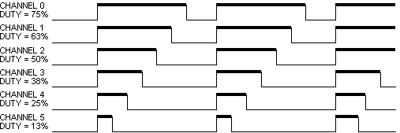
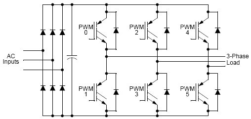
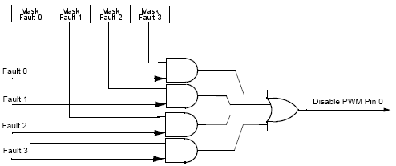

| PWMMC | |
|
|

Component
PWMMC
Pulse width modulation for motor control
Component Level: Low
Category:
CPU Internal Peripherals-Timer
Application Notes:
(Examples, notes and hints for the component usage.)
Align
The Align selects either Center-Aligned or Edge-Aligned PWMMC generator outputs. The center-aligned mode is shown on Figure 1. and the edge-aligned mode is shown on Figure 2..
For some peripherals period in the center-aligned mode can be times longer then in the edge-aligned mode.
 Figure 2. PWMMC Edge-Aligned Mode
Mode
The Mode selects either Complementary Channel Operation (see Figure 3. Note: grey places represent inserted deadtimes) or Independent Channel Operation (see Figure 1.) PWMMC generator outputs. The complementary chanel operation drives top and bottom transistors in an inverter circuit, such as the one in Figure 4..
 Figure 4. Typical 3-Phase Inverter
Output Pads
The PWMMC output Pads can be enabled or disabled by property Output Pads. The power-up default has the pads disabled. This settings does not affect the functionality of the PWMMC, so the PWMMC module can be energized with the output pads disabled. The Output Pads can be changed by the OutputPadEnable() and OutputPadDisable() methods. When the Output Pads are disabled the PWMMC pins are set to the tri-stated.
Frequency / Output Frequency
The Frequency of the PWMMC output is set by this property. The right output frequency is shown in Output Frequency.
For some peripherals frequency in the center-aligned mode can be half then in the edge-aligned mode (see Figure 5.).
The PWMMC output frequency can be set by the SetPeriod() or SetPrescaller() methods. Both methods are low-level methods and write the value of the parameter into register of the CPU. The Value for setting Frequency property can be shown by the Peripheral Initialization Inspector (see Figure 6.).
Dead-time
While in the Complementary mode, each PWM pair can be used to drive top/bottom transistors, illustrated in Figure 4.. Ideally, the PWM pairs are an inversion of each other. When the top PWM channel is active, the bottom PWM channel is inactive and vice versa.
To avoid short circuiting between top and bottom transistor, there must be no overlap of conducting intervals between top and bottom transistor. But the transistor’s characteristics make its switching-off time longer than switching-on time. To avoid the conducting overlap of top and bottom transistors, dead-time needs to be inserted in the switching period.
Dead-time generators automatically insert software-selectable activation delays into each pair of PWM outputs. The Pulse Module Dead-time (PMDEADTM) register specifies the number of PWM clock cycles to use for dead-time delay. Every time the PWM generator output changes state, dead-time is inserted. Dead-time forces both PWM outputs in the pair to the inactive state. The dead-time is shown in Figure 3..
Duty
This property set the pulse width. In the real-time the Duty is set by SetDuty(), SetDutyPercent(), SetRatio15() and SetRatio16() methods. The SetDuty() method is low-level method and set the registers of the PWMMC. The Value of SetDuty() method parameter is availabled by the Peripheral Initialization Inspector (see Figure 6.). The Value of duty is shown in Figure 1., Figure 2., Figure 3. by the thick line.
Reload / Half Cycle Reload
This property selects the PWM load frequency according Table 1.. Half Cycle Reload property enables half cycle reloads only in Center-Aligned mode. Half Cycle Reload has no effect on Edge-Aligned mode.
| Value | PWM Reload Frequency | Value | PWM Reload Frequency |
| 0 | Every PWM Reload Opportunity | 8 | Every 9 PWM Reload Opportunity |
| 1 | Every 2 PWM Reload Opportunity | 9 | Every 10 PWM Reload Opportunity |
| 2 | Every 3 PWM Reload Opportunity | 10 | Every 11 PWM Reload Opportunity |
| 3 | Every 4 PWM Reload Opportunity | 11 | Every 12 PWM Reload Opportunity |
| 4 | Every 5 PWM Reload Opportunity | 12 | Every 13 PWM Reload Opportunity |
| 5 | Every 6 PWM Reload Opportunity | 13 | Every 14 PWM Reload Opportunity |
| 6 | Every 7 PWM Reload Opportunity | 14 | Every 15 PWM Reload Opportunity |
| 7 | Every 8 PWM Reload Opportunity | 15 | Every 16 PWM Reload Opportunity |
Meaning of the PWM Reload Opportunity:
If the Half Cycle Reload property is enabled, a reload opportunity occurs at both beginning of PWM cycle or PWM half cycle. If the Half Cycle Reload property is disabled, a reload opportunity occurs only at the beginning of the cycle. Reload opportunities can only occur at the beginning of a PWM cycle in Edge-Aligned mode.
Version specific information for Freescale 56800, HCS12(X) derivatives
Mask fault x
Fault protection can disable any combination of PWMMC pins. Faults are generated by a Logic 1 on any of the FAULT pins. Each FAULT pin can be mapped arbitrarily to any of the PWMMC. When fault protection hardware disables PWMMC pins, the PWMMC generator continues to run, only the output pins are deactivated. The fault decoder disables PWMMC pins selected by the fault logic and the disable masking property. Please see Figure 7..

Figure 7. Fault Decoder for PWMMC Channel 0
Fault Clearing Mode
Mask fault x
Fault protection can disable any combination of PWMMC pins. Faults are generated by a Logic 1 on any of the FAULT pins. Each FAULT pin can be mapped arbitrarily to any of the PWMMC. When fault protection hardware disables PWMMC pins, the PWMMC generator continues to run, only the output pins are deactivated. The fault decoder disables PWMMC pins selected by the fault logic and the disable masking property. Please see Figure 7..
This property selects automatic or manual clearing of FAULTx pin faults. When the Clearing mode is set to manual, the fault flag must be clear by the ClearFaultFlag() method.